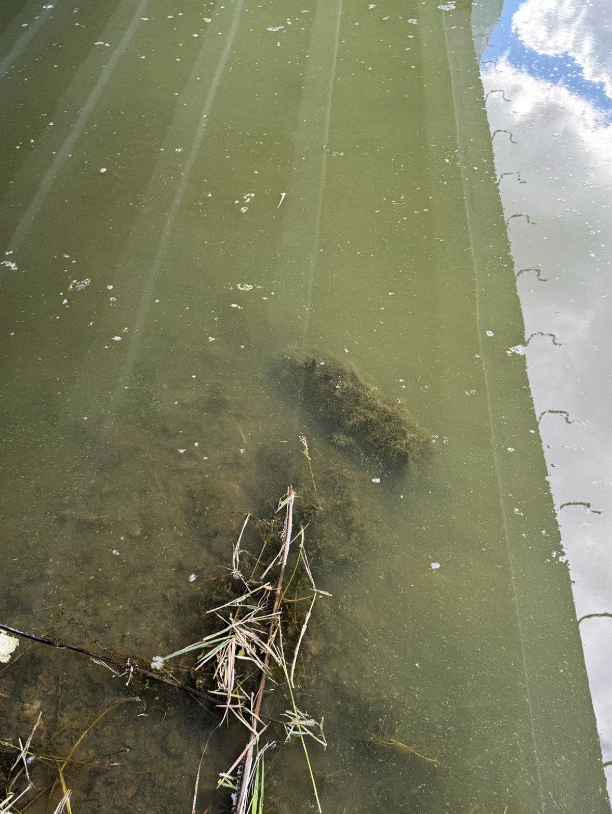
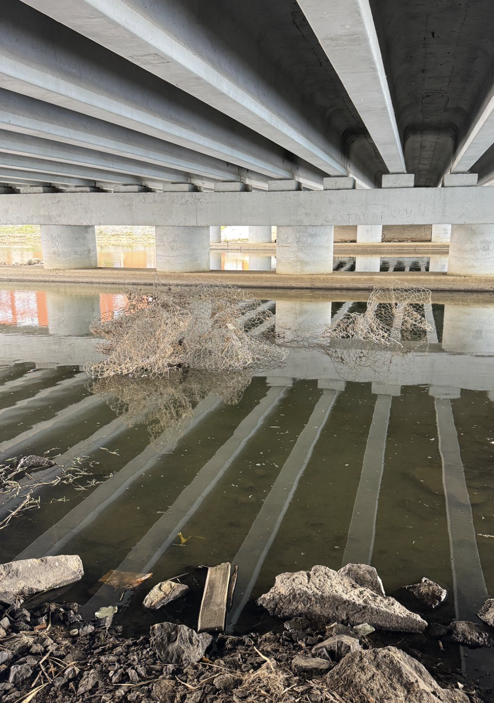
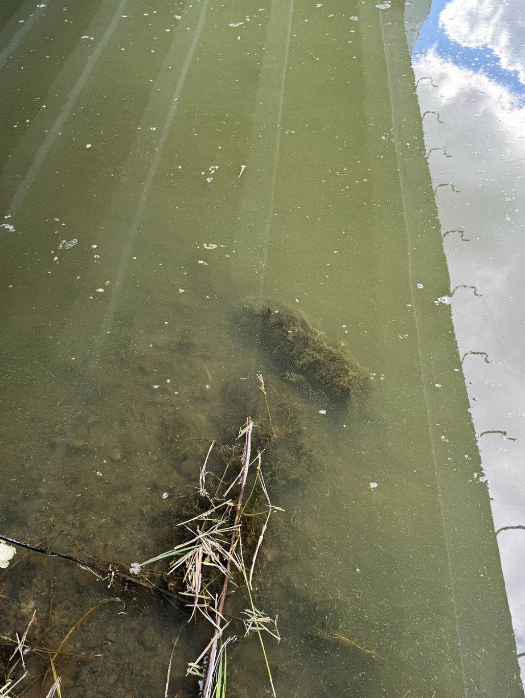
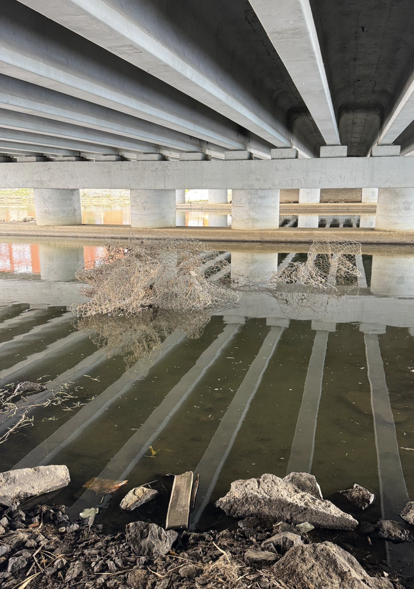
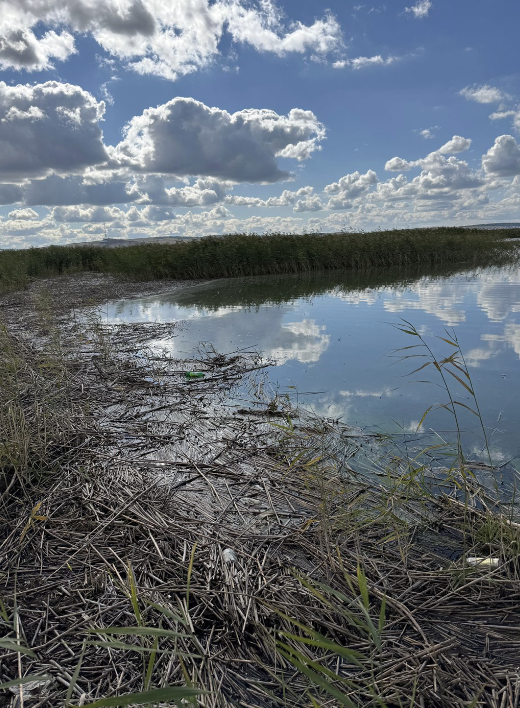
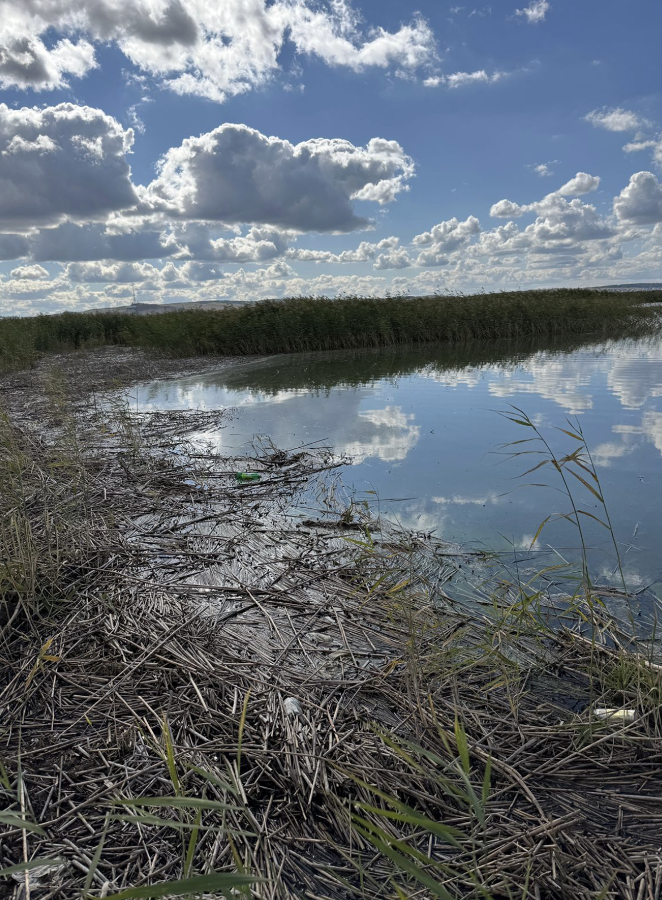

GENERAL INFORMATION
LAKE KOPA
is the natural lake in Akmola region, Kazakhstan, near the city of Kokshetau. It is one of the most important water body in the region and plays a significant ecological, and cultural role of the region.The lake's surface area is 14 km²,The lake's depth ranges from 2 to 3 meters. The water table is 223.8 meters above sea level. Lake Kopa ,with the nearest hills create an unique landscape which is important place in Kokshetau.
The Kylshakty and Shagalaly Rivers flow into the lake, and springs also bubble up from the bottom, feeding it. The lake is a flowing body of water and does not dry out in summer. The lake's dimensions are 5.4 km along its longest side and 3.3 km wide. The amplitude of water fluctuations in the lake is 0.5–1.5 m. The lake belongs to the Ishim water management basin and is part of the Kokshetau group of lakes.

Water research at Lake Kopa focuses on understanding the lake’s water quality, ecosystem health, and long-term sustainability. Scientists regularly monitor chemical indicators such as mineral levels, oxygen concentration, and pollution sources. These studies help identify how human activity, climate changes, and river inflows affect the lake.
LOCATIONS
EMBANKMENT
CITY EMBANKMENT is a popular lakeside spot known for its open views, calm atmosphere, and easy access to the water. It’s one of the most visited areas around Lake Kopa, making it a convenient location for observing the lake’s natural conditions and daily activity. This location was chosen because it reflects the strongest influence of human activity on the lake.
According to the research, this spot showed the highest level of pollution among all sampling locations. High visitor traffic and nearby infrastructure likely contribute to the increased amount of dissolved substances in the water.
Results of the research:
PPM: 635
Temperature: 18°C
LAKESIDE


KYLSHAKTY RIVER
KYLSHAKTY RIVER is a local river known for its flowing waters and natural surroundings. It flows into Lake Kopa, and the sampling location was chosen at the point where the river nearly becomes part of the lake. This spot was visually the most polluted, showing the strongest human impact on the river.
According to the research, this location showed lower levels of pollution compared to the first location. Nearby settlements and daily human activities likely contribute to the increased amount of dissolved substances in the water.
Results of the research:
PPM: 617
Temperature: 18°C
LAKESIDE
 



REMOTE PLACE
REMOTE LOCATION is an area far from human settlements, with minimal daily activity and natural surroundings largely untouched. The sampling location was chosen to represent parts of the lake and river system least affected by humans.
Despite being remote, research showed pollution levels similar to those at Kylshakty River, suggesting that dissolved substances can spread through the water system from more populated areas.
Results of the research:
PPM: 617
Temperature: 20°C
LAKESIDE
 



The research revealed that human activity has a significant impact on water quality in Lake Kopa and its inflowing rivers. High visitor traffic, nearby settlements, and infrastructure contribute to increased levels of dissolved substances, leading to pollution. Even remote areas showed signs of contamination, indicating that pollutants can spread through the water system and affect larger areas over time.

To improve water quality in Lake Kopa, several measures can be implemented. Cleaning plastic waste, limiting recreational pressure, installing water treatment facilities, and starting bioremediation can help reduce pollution. With these actions, TDS could stabilize at 400–500 ppm within a few years, species diversity could recover, and ecotourism could develop. Over time, these efforts could lower TDS to 300–400 ppm and create a self-sustaining ecosystem, preventing further degradation and the risk of the lake turning into a swamp.
Today this problem is raised more and more often
The Ministry of Ecology reported that, according to information from the Akmola Region Department of Natural Resources and Environmental Management, the developed project "Cleaning Lake Kopa of Silt Deposits in the City of Kokshetau, Akmola Region" is currently undergoing state review.
"The preliminary cost of the project is 23.7 billion tenge, with the final amount to be determined based on the review results. The project is expected to be completed in 2026–2028," the environmentalists added.(Ministry of Ecology, 2025)